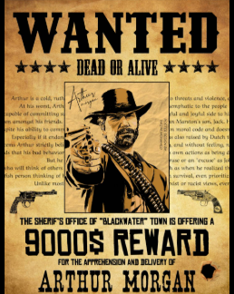
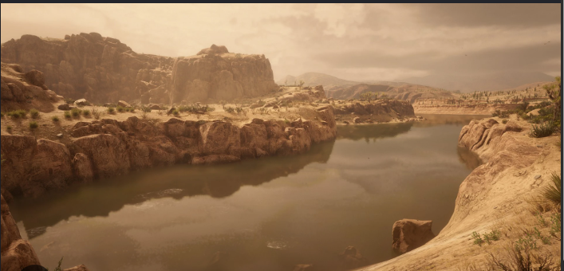
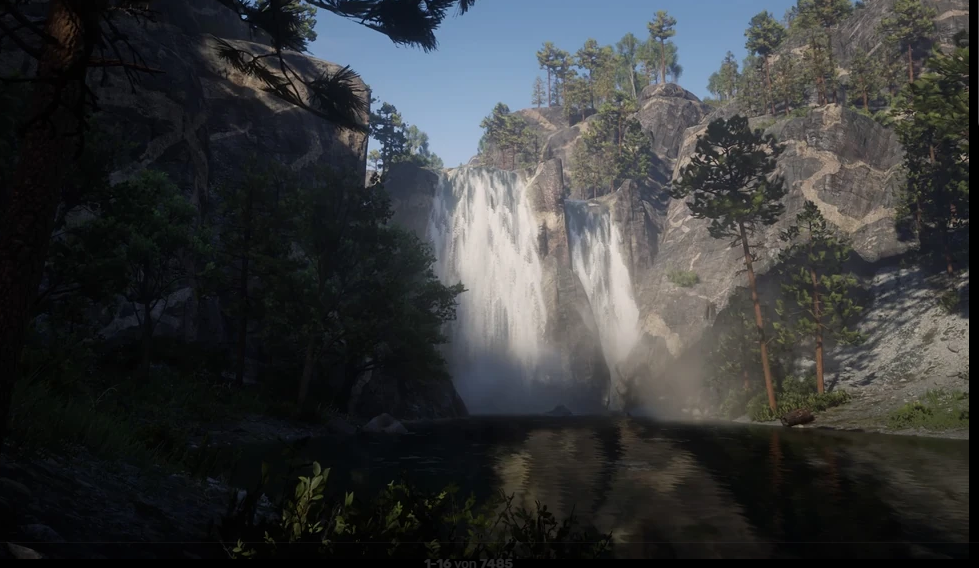
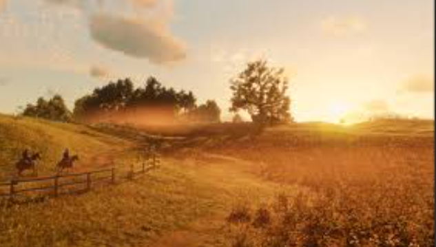
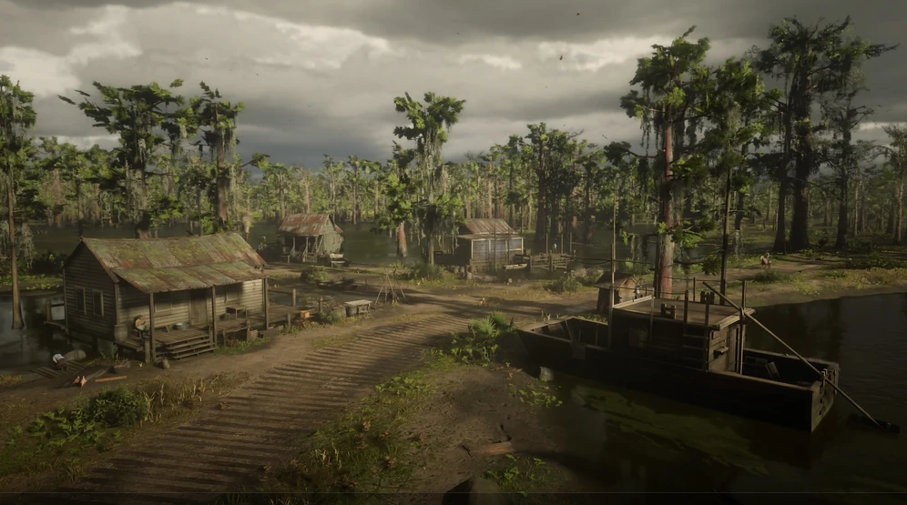
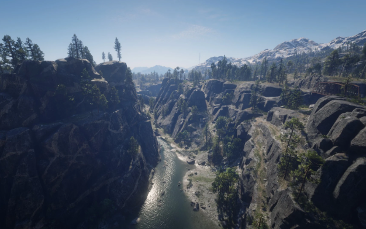
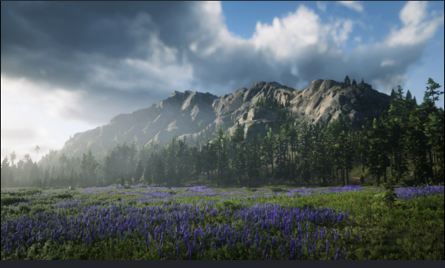
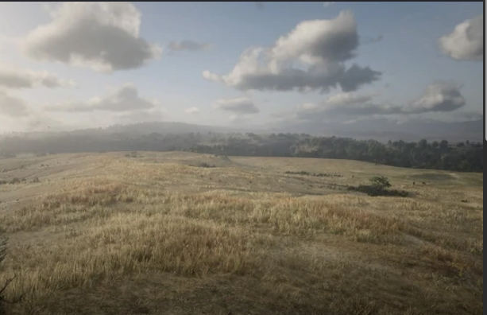
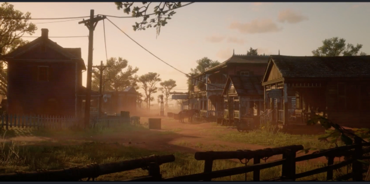
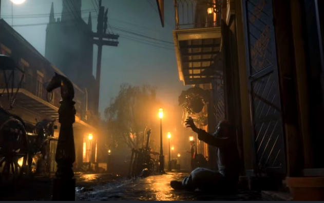

×


Легендарні пейзажі Red Dead Redemption 2









Художній відділ Rockstar витратив понад 2 роки на створення біомів RDR2: від засніжених гір до болотистих нетрів.
«Кожен світанок у грі унікальний — позиція сонця, хмари та кольорова гама генеруються динамічно. Ми хочемо, щоб гравці зупинялися і просто дивилися на горизонт» — Аарон Гарбут, провідний художник.